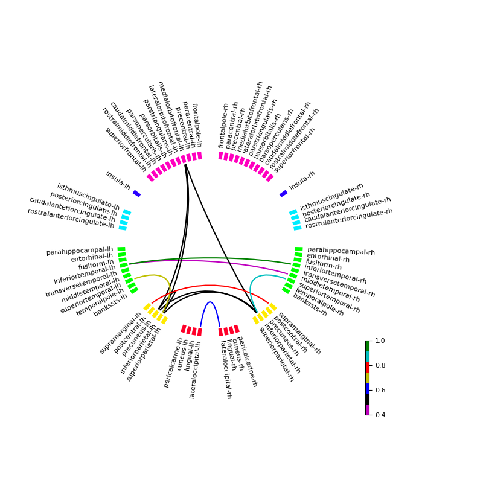

Note
Go to the end to download the full example code
Standard RSNs on the connectivity circle¶
Plot the visualization of the standard resting state network on the connectivity circle plot showing the Freesurfer aparc annotation map.
This provides a quick visualization of the primary connections of the standard resting state network.
Uses the standard RSNs provided by [1] [1] P. Garcés, M. C. Martín-Buro, and F. Maestú, “Quantifying the Test-Retest Reliability of Magnetoencephalography Resting-State Functional Connectivity,” Brain Connect., vol. 6, no. 6, pp. 448–460, 2016.
Author: Praveen Sripad <pravsripad@gmail.com>
Visual Left visual cortex : [-41 -77 3] lh Closest vertex on surface chosen: [6708]
[Parallel(n_jobs=4)]: Using backend LokyBackend with 4 concurrent workers.
[Parallel(n_jobs=4)]: Done 2 out of 4 | elapsed: 0.0s remaining: 0.0s
[Parallel(n_jobs=4)]: Done 4 out of 4 | elapsed: 0.1s remaining: 0.0s
[Parallel(n_jobs=4)]: Done 4 out of 4 | elapsed: 0.1s finished
Right visual cortex : [ 41 -72 1] rh Closest vertex on surface chosen: [10095]
[Parallel(n_jobs=4)]: Using backend LokyBackend with 4 concurrent workers.
[Parallel(n_jobs=4)]: Done 2 out of 4 | elapsed: 0.0s remaining: 0.0s
[Parallel(n_jobs=4)]: Done 4 out of 4 | elapsed: 0.1s remaining: 0.0s
[Parallel(n_jobs=4)]: Done 4 out of 4 | elapsed: 0.1s finished
Sensorimotor Left primary somatosensory cortex : [-38 -27 52] lh Closest vertex on surface chosen: [62711]
[Parallel(n_jobs=4)]: Using backend LokyBackend with 4 concurrent workers.
[Parallel(n_jobs=4)]: Done 2 out of 4 | elapsed: 0.0s remaining: 0.0s
[Parallel(n_jobs=4)]: Done 4 out of 4 | elapsed: 0.1s remaining: 0.0s
[Parallel(n_jobs=4)]: Done 4 out of 4 | elapsed: 0.1s finished
Right primary somatosensory cortex : [ 40 -25 50] rh Closest vertex on surface chosen: [71297]
[Parallel(n_jobs=4)]: Using backend LokyBackend with 4 concurrent workers.
[Parallel(n_jobs=4)]: Done 2 out of 4 | elapsed: 0.0s remaining: 0.0s
[Parallel(n_jobs=4)]: Done 4 out of 4 | elapsed: 0.1s remaining: 0.0s
[Parallel(n_jobs=4)]: Done 4 out of 4 | elapsed: 0.1s finished
Auditory Left primary auditory cortex : [-55 -21 7] lh Closest vertex on surface chosen: [72410]
[Parallel(n_jobs=4)]: Using backend LokyBackend with 4 concurrent workers.
[Parallel(n_jobs=4)]: Done 2 out of 4 | elapsed: 0.0s remaining: 0.0s
[Parallel(n_jobs=4)]: Done 4 out of 4 | elapsed: 0.1s remaining: 0.0s
[Parallel(n_jobs=4)]: Done 4 out of 4 | elapsed: 0.1s finished
Right primary auditory cortex : [ 57 -20 7] rh Closest vertex on surface chosen: [76848]
[Parallel(n_jobs=4)]: Using backend LokyBackend with 4 concurrent workers.
[Parallel(n_jobs=4)]: Done 2 out of 4 | elapsed: 0.0s remaining: 0.0s
[Parallel(n_jobs=4)]: Done 4 out of 4 | elapsed: 0.1s remaining: 0.0s
[Parallel(n_jobs=4)]: Done 4 out of 4 | elapsed: 0.1s finished
DMN Precuneus : [ 1 -57 28] lh Closest vertex on surface chosen: [29030]
[Parallel(n_jobs=4)]: Using backend LokyBackend with 4 concurrent workers.
[Parallel(n_jobs=4)]: Done 2 out of 4 | elapsed: 0.0s remaining: 0.0s
[Parallel(n_jobs=4)]: Done 4 out of 4 | elapsed: 0.1s remaining: 0.0s
[Parallel(n_jobs=4)]: Done 4 out of 4 | elapsed: 0.1s finished
Left inferior parietal : [-45 -65 30] lh Closest vertex on surface chosen: [15645]
[Parallel(n_jobs=4)]: Using backend LokyBackend with 4 concurrent workers.
[Parallel(n_jobs=4)]: Done 2 out of 4 | elapsed: 0.0s remaining: 0.0s
[Parallel(n_jobs=4)]: Done 4 out of 4 | elapsed: 0.1s remaining: 0.0s
[Parallel(n_jobs=4)]: Done 4 out of 4 | elapsed: 0.1s finished
Right inferior parietal : [ 52 -60 26] rh Closest vertex on surface chosen: [26366]
[Parallel(n_jobs=4)]: Using backend LokyBackend with 4 concurrent workers.
[Parallel(n_jobs=4)]: Done 2 out of 4 | elapsed: 0.0s remaining: 0.0s
[Parallel(n_jobs=4)]: Done 4 out of 4 | elapsed: 0.1s remaining: 0.0s
[Parallel(n_jobs=4)]: Done 4 out of 4 | elapsed: 0.1s finished
Anterior cingulate : [ 2 42 7] lh Closest vertex on surface chosen: [155310]
[Parallel(n_jobs=4)]: Using backend LokyBackend with 4 concurrent workers.
[Parallel(n_jobs=4)]: Done 2 out of 4 | elapsed: 0.0s remaining: 0.0s
[Parallel(n_jobs=4)]: Done 4 out of 4 | elapsed: 0.1s remaining: 0.0s
[Parallel(n_jobs=4)]: Done 4 out of 4 | elapsed: 0.1s finished
Left FP Left angular gyrus : [-40 -58 56] lh Closest vertex on surface chosen: [24630]
[Parallel(n_jobs=4)]: Using backend LokyBackend with 4 concurrent workers.
[Parallel(n_jobs=4)]: Done 2 out of 4 | elapsed: 0.0s remaining: 0.0s
[Parallel(n_jobs=4)]: Done 4 out of 4 | elapsed: 0.1s remaining: 0.0s
[Parallel(n_jobs=4)]: Done 4 out of 4 | elapsed: 0.1s finished
Left middle frontal gyrus : [-42 28 23] lh Closest vertex on surface chosen: [126993]
[Parallel(n_jobs=4)]: Using backend LokyBackend with 4 concurrent workers.
[Parallel(n_jobs=4)]: Done 2 out of 4 | elapsed: 0.0s remaining: 0.0s
[Parallel(n_jobs=4)]: Done 4 out of 4 | elapsed: 0.1s remaining: 0.0s
[Parallel(n_jobs=4)]: Done 4 out of 4 | elapsed: 0.1s finished
Right FP Right angular gyrus : [ 53 -50 43] rh Closest vertex on surface chosen: [38519]
[Parallel(n_jobs=4)]: Using backend LokyBackend with 4 concurrent workers.
[Parallel(n_jobs=4)]: Done 2 out of 4 | elapsed: 0.0s remaining: 0.0s
[Parallel(n_jobs=4)]: Done 4 out of 4 | elapsed: 0.1s remaining: 0.0s
[Parallel(n_jobs=4)]: Done 4 out of 4 | elapsed: 0.1s finished
Right middle frontal gyrus : [45 28 26] rh Closest vertex on surface chosen: [130082]
[Parallel(n_jobs=4)]: Using backend LokyBackend with 4 concurrent workers.
[Parallel(n_jobs=4)]: Done 2 out of 4 | elapsed: 0.0s remaining: 0.0s
[Parallel(n_jobs=4)]: Done 4 out of 4 | elapsed: 0.1s remaining: 0.0s
[Parallel(n_jobs=4)]: Done 4 out of 4 | elapsed: 0.1s finished
Frontoinsular Left insula : [-38 16 2] lh Closest vertex on surface chosen: [115415]
[Parallel(n_jobs=4)]: Using backend LokyBackend with 4 concurrent workers.
[Parallel(n_jobs=4)]: Done 2 out of 4 | elapsed: 0.0s remaining: 0.0s
[Parallel(n_jobs=4)]: Done 4 out of 4 | elapsed: 0.1s remaining: 0.0s
[Parallel(n_jobs=4)]: Done 4 out of 4 | elapsed: 0.1s finished
Right insula : [38 16 2] rh Closest vertex on surface chosen: [119046]
[Parallel(n_jobs=4)]: Using backend LokyBackend with 4 concurrent workers.
[Parallel(n_jobs=4)]: Done 2 out of 4 | elapsed: 0.0s remaining: 0.0s
[Parallel(n_jobs=4)]: Done 4 out of 4 | elapsed: 0.1s remaining: 0.0s
[Parallel(n_jobs=4)]: Done 4 out of 4 | elapsed: 0.1s finished
Median cingulate : [-2 12 40] lh Closest vertex on surface chosen: [110618]
[Parallel(n_jobs=4)]: Using backend LokyBackend with 4 concurrent workers.
[Parallel(n_jobs=4)]: Done 2 out of 4 | elapsed: 0.0s remaining: 0.0s
[Parallel(n_jobs=4)]: Done 4 out of 4 | elapsed: 0.1s remaining: 0.0s
[Parallel(n_jobs=4)]: Done 4 out of 4 | elapsed: 0.1s finished
Reading labels from parcellation...
read 34 labels from /Users/praveen.sripad/nanna_data/mne_data/MNE-sample-data/subjects/sample/label/lh.aparc.annot
read 34 labels from /Users/praveen.sripad/nanna_data/mne_data/MNE-sample-data/subjects/sample/label/rh.aparc.annot
Left: Visual_Left visual cortex-lh [6708] <Label | sample, 'lateraloccipital-lh', lh : 7446 vertices> 22
Right: Visual_Right visual cortex-rh [10095] <Label | sample, 'lateraloccipital-rh', rh : 7995 vertices> 23
Left: Sensorimotor_Left primary somatosensory cortex-lh [62711] <Label | sample, 'supramarginal-lh', lh : 6100 vertices> 62
Right: Sensorimotor_Right primary somatosensory cortex-rh [71297] <Label | sample, 'supramarginal-rh', rh : 5872 vertices> 63
Left: Auditory_Left primary auditory cortex-lh [72410] <Label | sample, 'inferiortemporal-lh', lh : 6363 vertices> 16
Right: Auditory_Right primary auditory cortex-rh [76848] <Label | sample, 'middletemporal-rh', rh : 6424 vertices> 31
Left: DMN_Precuneus-lh [29030] <Label | sample, 'precuneus-lh', lh : 5969 vertices> 50
Left: DMN_Left inferior parietal-lh [15645] <Label | sample, 'inferiorparietal-lh', lh : 7839 vertices> 14
Right: DMN_Right inferior parietal-rh [26366] <Label | sample, 'inferiorparietal-rh', rh : 8562 vertices> 15
Left: DMN_Anterior cingulate-lh [155310] <Label | sample, 'medialorbitofrontal-lh', lh : 3683 vertices> 28
Left: Left FP_Left angular gyrus-lh [24630] <Label | sample, 'inferiorparietal-lh', lh : 7839 vertices> 14
Left: Left FP_Left middle frontal gyrus-lh [126993] <Label | sample, 'superiortemporal-lh', lh : 5433 vertices> 60
Right: Right FP_Right angular gyrus-rh [38519] <Label | sample, 'inferiorparietal-rh', rh : 8562 vertices> 15
Right: Right FP_Right middle frontal gyrus-rh [130082] <Label | sample, 'superiortemporal-rh', rh : 5404 vertices> 61
Left: Frontoinsular_Left insula-lh [115415] <Label | sample, 'inferiortemporal-lh', lh : 6363 vertices> 16
Right: Frontoinsular_Right insula-rh [119046] <Label | sample, 'inferiortemporal-rh', rh : 5554 vertices> 17
<Figure size 800x800 with 2 Axes>
import os.path as op
import numpy as np
import mne
from mne.datasets import sample
from jumeg.jumeg_utils import get_jumeg_path
from jumeg.connectivity import make_annot_from_csv
from jumeg.connectivity import plot_grouped_connectivity_circle
data_path = sample.data_path()
subject = 'sample'
subjects_dir = op.join(data_path, 'subjects')
parc_fname = 'standard_garces_2016'
csv_fname = op.join(get_jumeg_path(), 'data', 'standard_rsns.csv')
# set make_annot to True to save the annotation to disk
labels, coords, foci = make_annot_from_csv(subject, subjects_dir, csv_fname,
parc_fname=parc_fname,
make_annot=False,
return_label_coords=True)
aparc = mne.read_labels_from_annot('sample', subjects_dir=subjects_dir)
aparc_names = [apa.name for apa in aparc]
lh_aparc = [mylab for mylab in aparc if mylab.hemi == 'lh']
rh_aparc = [mylab for mylab in aparc if mylab.hemi == 'rh']
# get the appropriate resting state labels
rst_aparc = []
for i, rst_label in enumerate(labels):
myfoci = foci[i] # get the vertex
if rst_label.hemi == 'lh': # vertex hemi is stored in the rst_label
for mylab in lh_aparc:
if myfoci in mylab.vertices:
print('Left: ', rst_label.name, myfoci, mylab, aparc.index(mylab))
rst_aparc.append(mylab)
elif rst_label.hemi == 'rh':
for mylab in rh_aparc:
if myfoci in mylab.vertices:
print('Right: ', rst_label.name, myfoci, mylab, aparc.index(mylab))
rst_aparc.append(mylab)
else:
print('ERROR: ', rst_label)
# only 16 labels in aparc show up, there are no vertices in the left hemi for
# Frontoinsular_Median cingulate-lh
rst_indices = [aparc.index(rst) for rst in rst_aparc]
networks = {'Visual': ['lateraloccipital-lh', 'lateraloccipital-rh'],
'Sensorimotor': ['supramarginal-lh', 'supramarginal-rh'],
'Auditory': ['inferiortemporal-lh', 'middletemporal-rh'],
'DMN': ['precuneus-lh', 'inferiorparietal-lh',
'inferiorparietal-rh', 'medialorbitofrontal-lh'],
'Left_FP': ['inferiorparietal-lh', 'superiortemporal-lh'],
'Right_FP': ['inferiorparietal-rh', 'superiortemporal-rh'],
'Frontoinsular': ['inferiortemporal-lh', 'inferiortemporal-rh']}
# make a temporary connectivity matrix
n_nodes = 68
con = np.zeros((n_nodes, n_nodes))
rst_combindices = [[16, 31], [50, 14], [50, 15], [50, 28], [14, 15],
[14, 28], [15, 28], [22, 23], [14, 60], [62, 63],
[15, 61],
[16, 17]]
# assign different values to different networks manually
con[16, 31] = 0.4 # Auditory
con[50, 14] = con[50, 15] = con[50, 28] = con[14, 15] = con[14, 28] = con[15, 28] = 0.5 # DMN
con[22, 23] = 0.6 # Visual
con[14, 60] = 0.7 # Left FP
con[62, 63] = 0.8 # Sensorimotor
con[15, 61] = 0.9 # Right FP
con[16, 17] = 1 # Frontoinsular
con += con.T # since we only add the combinations
# plot the connectivity circle showing standard RSNs
from matplotlib.colors import ListedColormap
cmap = ListedColormap(['m', 'k', 'b', 'y', 'r', 'c', 'g'])
yaml_fname = get_jumeg_path() + '/data/desikan_aparc_cortex_based_grouping.yaml'
plot_grouped_connectivity_circle(yaml_fname, con, aparc_names, n_lines=12,
labels_mode=None, colormap=cmap, colorbar=True,
replacer_dict=None, indices=None,
out_fname='fig_rsn_circle_plot.png')
Total running time of the script: ( 0 minutes 4.028 seconds)